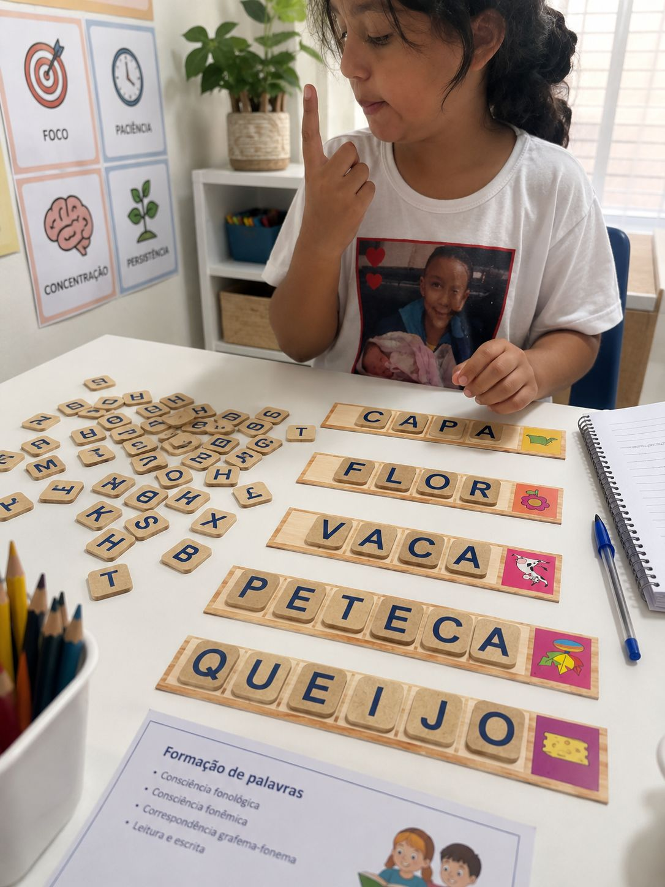
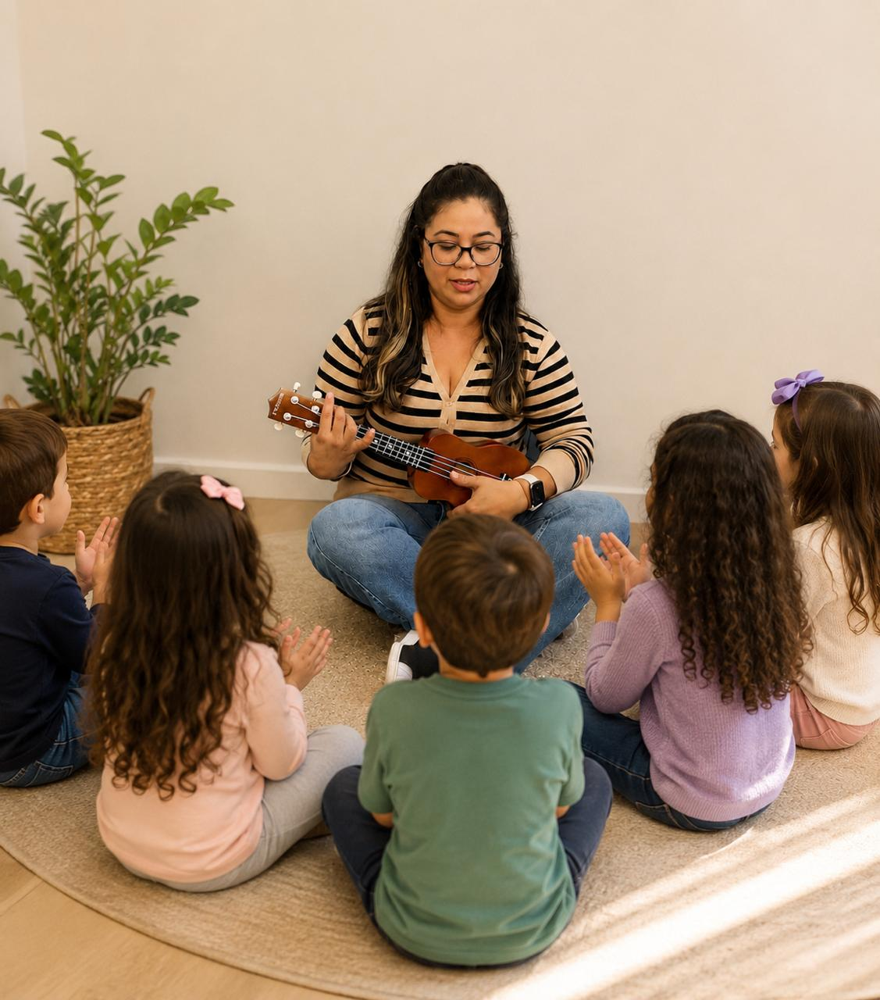
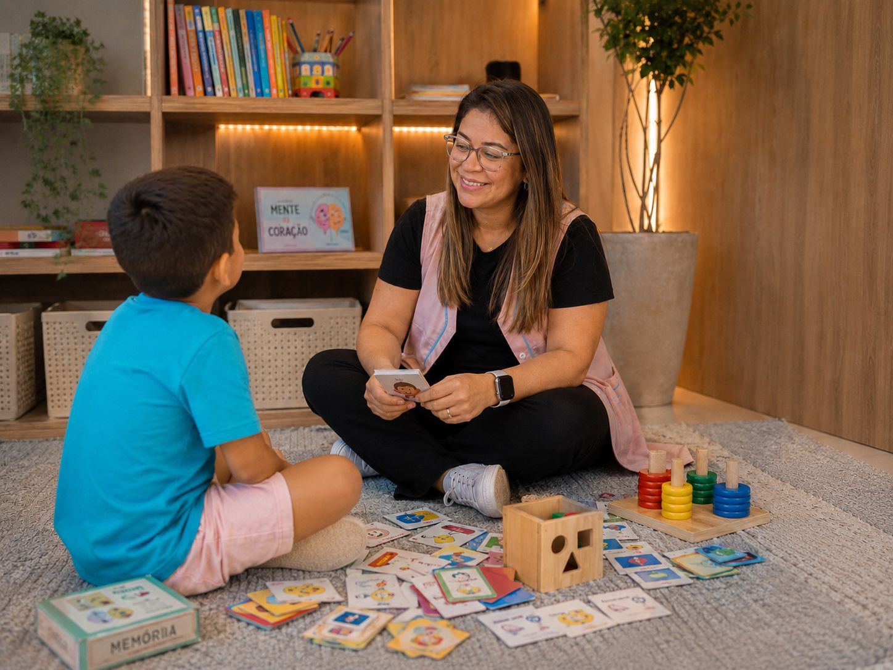

Aa
Alfabetização e letramento
Consciência fonológica, método fônico, leitura e escrita em atividades adequadas ao ritmo da criança.
Reforço escolar com acolhimento, estratégia e intencionalidade pedagógica para desenvolver o potencial de cada criança.
Estratégias personalizadas para fortalecer habilidades, superar dificuldades e construir mais confiança no processo de aprendizagem.
Consciência fonológica, método fônico, leitura e escrita em atividades adequadas ao ritmo da criança.
Leitura, interpretação de textos, escrita, ortografia e produção textual de forma significativa.
Construção do raciocínio lógico e compreensão dos conteúdos com exemplos práticos e recursos visuais.
Apoio cuidadoso nas tarefas e conteúdos trabalhados pela escola, promovendo autonomia e organização.
Plano de acompanhamento alinhado às necessidades, potencialidades e desafios de cada aluno.
Aprendizagem conectada ao desenvolvimento cognitivo, motor, socioemocional e à autoestima.
Uma estrutura flexível para que o acompanhamento pedagógico faça parte da rotina da família.
Atendimento preparado para encontros interativos, com recursos visuais, materiais direcionados e acompanhamento próximo mesmo à distância.
Encontros conforme disponibilidade, em ambiente acolhedor e com atividades práticas planejadas para cada criança.
Sou professora e educadora, com experiência na Educação Infantil e no Ensino Fundamental, atuando no desenvolvimento integral das crianças por meio de uma prática lúdica, afetiva, inclusiva e intencional.
Meu trabalho respeita o ritmo e as necessidades individuais de cada aluno. Utilizo estratégias personalizadas para favorecer a aprendizagem, a autonomia, a alfabetização e o desenvolvimento cognitivo, motor e socioemocional.
Jogos, histórias, artes, atividades práticas e recursos visuais transformam o processo de aprender em uma experiência mais significativa, prazerosa e possível.
Meu propósito é olhar para cada criança de forma individual, reconhecer suas potencialidades e ajudá-la a avançar com confiança, autonomia e prazer em aprender.
Estímulos lúdicos e intencionais para apoiar linguagem, coordenação, consciência fonológica, autonomia e desenvolvimento integral.
Reforço dos conteúdos, apoio nas dificuldades e estratégias que ajudam a criança a compreender, praticar e ganhar autonomia.
Cada atividade é planejada para transformar conteúdos em descobertas, respeitando o ritmo e a maneira singular de aprender de cada criança.



Relatos de famílias que acompanham de perto o desenvolvimento e as conquistas de seus filhos.
“Minha filha começou as aulas sem saber ler e, em aproximadamente dois meses, já estava lendo. A Profª Cris é extremamente paciente, atenciosa e dedicada. Respeita o tempo da criança e ensina de forma leve e acolhedora. Sou muito grata por todo o carinho e dedicação. Super recomendo!”
“A alfabetização é uma etapa que ficará para sempre na memória da minha filha, e ser acompanhada por alguém que ensina com amor torna tudo ainda mais especial. Obrigada por cada palavra ensinada, pelo incentivo e, principalmente, por acreditar nela. Educadores como você fazem a diferença na vida de uma criança.”
As aulas presenciais são realizadas conforme disponibilidade e localização da família. Para quem busca flexibilidade, a estrutura online permite um acompanhamento próximo e interativo de onde estiver.
Atendimento para Educação Infantil e Ensino Fundamental – Anos Iniciais, com estratégias adaptadas às necessidades de cada criança.
Preencha os dados ao lado. Ao enviar, uma cópia será encaminhada por e-mail e o WhatsApp abrirá com a mesma mensagem pronta para confirmação.
Conte um pouco sobre as necessidades da criança e tire suas dúvidas diretamente com a Profª Cris.